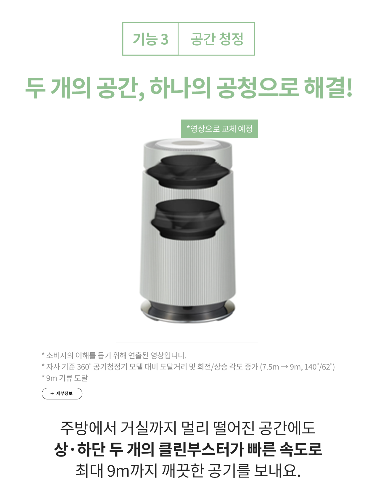

LG Objet Collection
이 문장은 여러분의 브라우저가 video 태그를 지원하지 않을 때 화면에 표시됩니다!
세부정보
[Centum System™ 을 가능하게 하는 기술]
진동 감지 센서
진동 발생 시 센서로 알아서 회전속도 조절
듀얼 볼 밸런서
옷감이 한쪽으로 쏠리면 볼 밸런서로 균형 조절
진동 저감 장치
유연한 진동 저감 장치로 세탁통으로 전달되는 진동 차단
진동 완화 장치
3개의 서스펜션과 2개의 댐퍼로 승차감이 좋은 차처럼 충격 완화